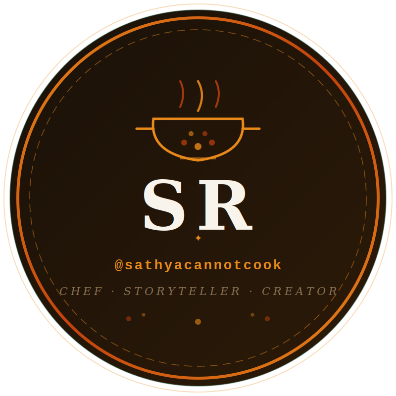

Sathya RamkumarChef at Ängsbacka, a retreat and transformational community in Sweden. South Indian and Indian-fusion food, guided by Ayurveda, for events from 50 to around 900 people.
I cook community food at scale, from 50-person retreat meals to festival service for around 900 people.
My kitchen at Ängsbacka is where I learned to plan, batch and serve for every diet at once. My cooking is rooted in South Indian and Indian-fusion food, guided by Ayurvedic principles, and growing into gluten-free baking and sourdough.
I spent more than 20 years building software before I moved into the kitchen, and I still cook the way I build systems: every recipe is a repeatable production plan with exact ratios, clear roles and a timeline.
Every dish is written as a scalable production sheet with ratios, role split and a timeline.
Allium-free, vegan and standard batches are planned together, with separate quantities tracked for each.
I work best without high-pressure kitchen culture, and I build teams and systems that make that possible.
Festival service across the community kitchen.
Buckwheat crackers, pumpkin soup and potato wedges.
A four-meal retreat menu.
Salad service with structured prep sheets and allergen management.
Beyond cooking, I design the systems that keep a community kitchen running smoothly.
Drawing on my background in software, I have proposed four changes for the Ängsbacka kitchen. It runs two shifts (9:30am to 3pm, and 2:30pm to 8pm), so handovers matter.
Shared digital tools for prep sheets, planning and communication.
A repeatable onboarding path so quality does not depend on who is on shift.
Prep and service tasks arranged around the two-shift pattern.
A rotating lead role so more people build kitchen confidence.
Every recipe I cook at scale becomes a production sheet in one consistent format: same layout, same section numbering, same role badges and checklists.
Whole spices, toasted and ground fresh.
Whole spices are dry-toasted and ground fresh, ideally the day before. Mace goes in last, for only 30 to 45 seconds. Bay leaf is infused whole and removed before service, never ground. Urid dal is rinsed and dried before tempering so it does not burn.
Market research groundwork done: survey design and competitor landscape.
Planning wholesale to cafés, restaurants and hotels.
Early concept with an Italian pizza expert, aimed at aspiring pizzeria owners.
Planning a stall serving freshly cooked food.
Importing Indian coffee and spices from Chennai to the kitchen in Sweden.
From 20 years of software to a community kitchen, told through captions and branded production sheets.
Follow @sathyacannotcook on Instagram[ADD: two or three sentences about a specific event]
[ADD: two or three sentences about a specific event]
[ADD: two or three sentences about working alongside you]